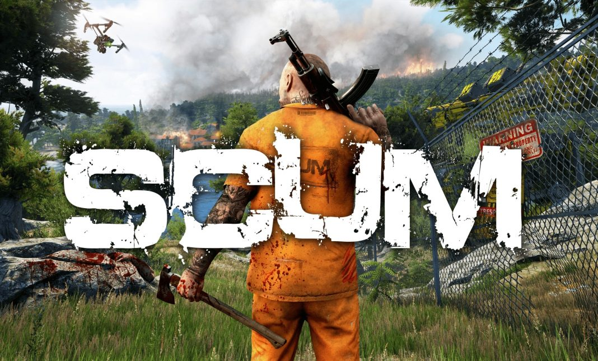
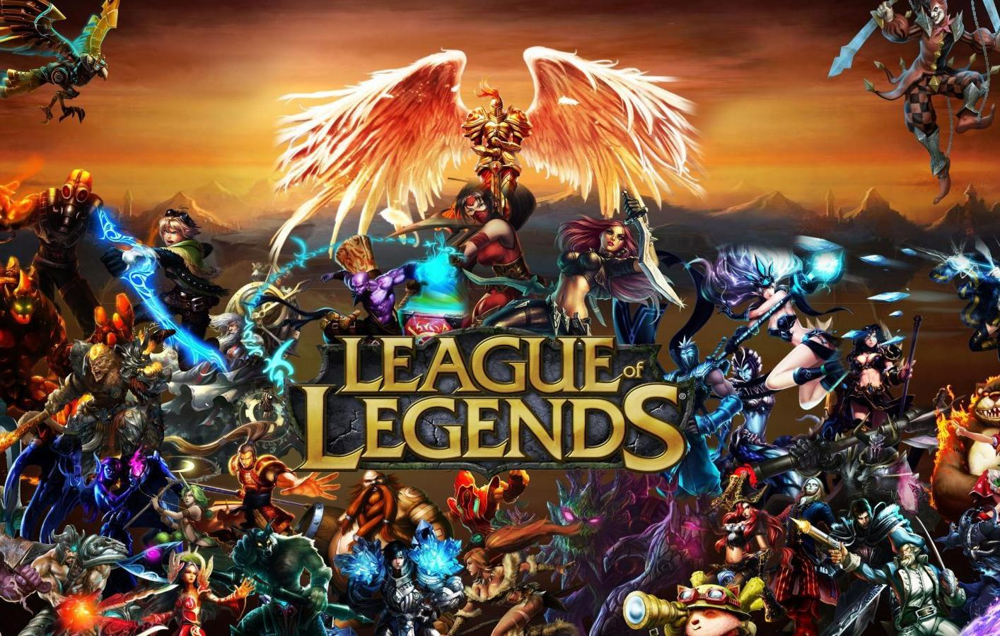
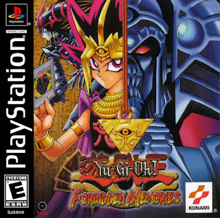

SCUM é um jogo de sobrevivência em mundo aberto. Você é um prisioneiro supermax que luta pela sobrevivência e fama contra outros presos, vivos e mortos. SCUM apresenta um nível sem precedentes de personalização de personagens vinculado à mecânica de sobrevivência, biologia e física em profundidade, incluindo metabolismo, inércia, umidade e consciência.
SCUM
League of Legends
Bom, esse é um jogo que é bem dificil que alguém não conheça, mas League of Legends é um jogo de estratégia em que duas equipes de cinco poderosos Campeões se enfrentam para destruir a base uma da outra. Em seu lançamento, League of Legends recebeu várias avaliações positivas dos críticos, que destacaram a acessibilidade, design de personagens e valor de produção.
RE3: Nemesis

Essa franquia marcou minha infancia não tem como não listar o meu favorito dela. Resident Evil 3: Nemesis, é um jogo eletrônico de survival horror desenvolvido e publicado pela Capcom, lançado originalmente para o PlayStation em 1999. É o terceiro jogo da franquia Resident Evil, e ocorre antes e após os acontecimentos de Resident Evil 2
Yu-Gi-Oh
Outro jogo que tomou horas, dias e possivelmente 2 anos da minha vida foi essa maravilha. Yu-Gi-Oh! A principal qualidade do jogo é a sua simplicidade: nada de centenas cartas com efeitos diferentes e regras complexas, ou enredos complexos e mirabolantes. O jogo preza pelos duelos dinâmicos e pela evolução constante do jogador.